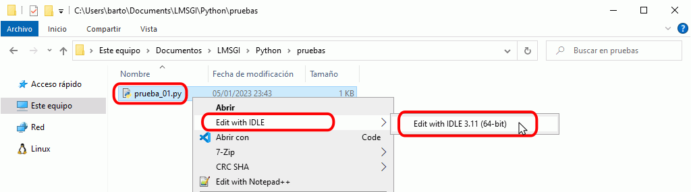
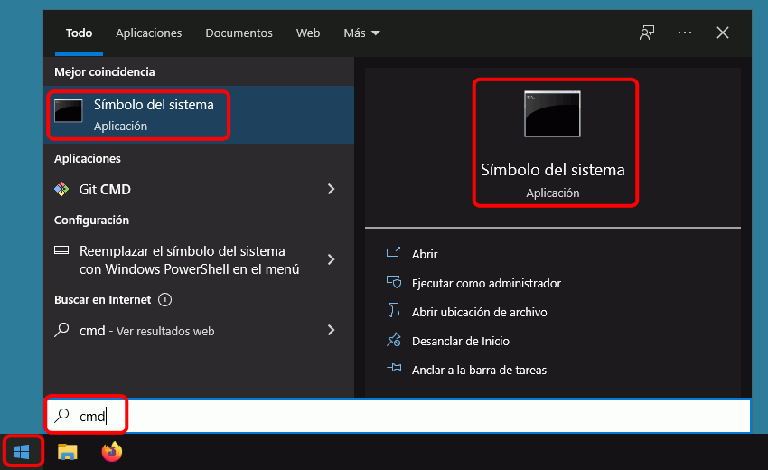
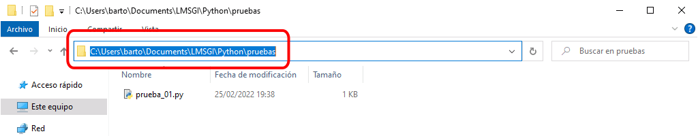

IDLE (Integrated DeveLopment Environment for Python) es el entorno de desarrollo que permite editar y ejecutar los programas. Se pueden crear y ejecutar programas en Python sin utilizar IDLE, pero IDLE hace mucho más fáciles esas tareas (de hecho, IDLE en inglés significa holgazán).
Al abrir IDLE con el acceso directo Inicio > Python 3.6 > IDLE (Python 3.6), se abrirá la ventana principal de IDLE, como muestra la imagen siguiente.
Esta ventana indica la versión de Python instalada.
Nota: La ventana de la imagen tiene un tamaño de 80x20 caracteres en vez del tamaño predeterminado de 80x40 caracteres
En la ventana de IDLE se pueden escribir órdenes de Python después del símbolo de petición >>> (en inglés, prompt). Al pulsar Intro, IDLE ejecutará la orden inmediatamente. Si la orden produce algún resultado, éste se mostrará en color azul y sin el símbolo de petición. Por ejemplo, se puede comprobar que Python sabe sumar dos más dos:
>>> 2 + 2
4>>>
Al terminar de ejecutar la orden, IDLE vuelve a mostrar el símbolo de petición, en espera de una nueva orden.
Se pueden recuperar órdenes anteriores mediante los atajos de teclado:
Alt+p para ver la instrucción anterior (supongo que p es por previous, en español, anterior)
Alt+n para ver la instrucción siguiente (supongo que n es por next, en español, siguiente)
Colores en los programas
Al escribir órdenes en IDLE, algunas palabras cambian de color. Los colores ayudan a identificar los distintos tipos de elementos y a localizar errores:
Las palabras reservadas de Python (las que forman parte del lenguaje) se muestran en color naranja.
Las cadenas de texto se muestran en verde.
Los resultados de las órdenes se escriben en azul.
Los mensajes de error se muestran en rojo.
Las funciones se muestran en púrpura.
Las cadenas de texto deben delimitarse con comillas dobles (") o con comillas simples ('):
>>>print('hola')
hola>>>print("hola")
hola>>>
Si la orden contiene algún error, Python escribe un mensaje de error en inglés que indica dónde se ha producido el error y por qué.
>>>print(hola)
Traceback (most recent call last):
File "<pyshell#3>", line 1, in ?
print hola
NameError: name 'hola' is not defined>>>
En este ejemplo, el error se debe a que hola no está entre comillas y Python entiende que se hace referencia a una variable que se llama hola; al no estar definida previamente ninguna variable que se llame así, se produce un error.
Los argumentos de las funciones deben ir rodeados de paréntesis (en los ejemplos anteriores, la función es la función print() y el argumento de la función, es decir, lo que se le da a la función para que haga su trabajo, es la cadena de texto). Si no se escriben los paréntesis, Python indica que se ha cometido un error de sintaxis:
>>>print"hola"SyntaxError: invalid syntax>>>
Conservar los programas en archivos
El inconveniente de la ventana principal de IDLE es que para repetir una orden hay que volver a escribirla. Si simplemente queremos practicar órdenes sencillas la ventana principal de IDLE es suficiente, pero si se trata de un programa más complejo es conveniente guardar el programa en un archivo para poderlo recuperar posteriormente. Como además normalmente los programas no salen bien a la primera, eso permite corregir los errores sin tener que volver a escribir todo.
Para crear un archivo de programa con IDLE, abra una nueva ventana mediante el menú File > New File (o el atajo de teclado Ctrl+N).
Guardar los programas en archivos - Paso 3
Al elegir esta opción se abrirá una nueva ventana como la de la imagen.
En esta ventana ya no aparece el simbolo de petición porque es simplemente un editor de texto (que colorea el código de Python). Por eso los menús de esta ventana no son los mismos que los de la ventana principal de IDLE.
Guardar los programas en archivos - Paso 4
Escriba por ejemplo el programa:
print("Hola, mundo") print("Adios, mundo")
Habrá observado que en esta ventana, cuando se pulsa Intro, no se ejecuta la orden, sino que simplemente se pasa a la línea siguiente.
Guardar los programas en archivos - Paso 5
Para poder ejecutar el programa, primero es necesario guardarlo. Elija la opción del menú File > Save o File > Save As ... para guardar el archivo (también puede utilizar el atajo de teclado Ctrl+S).
Guardar los programas en archivos - Paso 6
La primera vez que guarde un programa se abrirá la ventana de diálogo estándar de Windows. Elija la carpeta y el nombre del archivo. La extensión habitual de los programas de Python es .py. Si no escribe la extensión, IDLE la añadirá automáticamente.
Guardar los programas en archivos - Paso 7
Una vez guardado el programa, el nombre del archivo aparece en la barra de título de la ventana.
Guardar los programas en archivos - Paso 8
Una vez haya guardado el programa, puede ejecutarlo mediante la opción del menú Run > Run module (también puede utilizar la tecla F5).
Guardar los programas en archivos - Paso 9
La salida del programa se mostrará en la ventana principal de IDLE.
El procedimiento de trabajo es siempre el mismo: escriba o modifique el programa en la ventana secundaria, guárdelo, ejecútelo y, en su caso, la salida del programa se mostrará en la ventana principal. Si quiere, puede tener varias ventanas secundarias abiertas simultáneamente.
Al escribir un programa tenga cuidado en no escribir espacios en blanco innecesarios al principio de una línea, porque Python mostrará un mensaje de error. Más adelante, en la lección de if.. elif... else.., aprenderá cuándo se deben poner espacios en blanco y qué significan en Python, pero en las primeras lecciones (Operaciones aritméticas elementales, Variables, Salida por pantalla y Entrada por teclado) no debe poner espacios en blanco al principio de la línea.
Ejecutar programas en IDLE
Puede ejecutar en IDLE programas creados anteriormente, de dos maneras equivalentes:
Abra IDLE y abra desde IDLE el fichero del programa (menú File > Open):
Abra en el Explorador de Windows la carpeta que contiene el programa, haga clic derecho sobre el programa y elija la opción "Edit with IDLE > Edit with IDLE 3.6 (64-bit)";

Una vez abierto el programa en IDLE, ejecútelo pulsando F5 o mediante el menú Run > Rum module.
Ejecutar programas en ventana de terminal
Puede ejecutar en una ventana de terminal o de PowerShell programas creados anteriormentes, de varias maneras equivalentes:
Abra una ventana de terminal desde el menú de inicio, (Inicio > cmd ), cambie a la carpeta donde esté el programa y escriba el nombre del programa (con la extensión).

Abra una ventana de terminal desde el menú de inicio, (Inicio > cmd ) y escriba la ruta y el nombre del programa (con la extensión).
Abra una ventana de PowerShell desde el Explorador de Windows y escriba py y el nombre del programa (con la extensión). Para ello vaya hasta la carpeta que contiene el programa, haga Shift + clic derecho y elija la opción "Abrir la ventana de PowerShell aquí" (en Windows 10) o "Abrir ventana de comandos aquí" (en Windows 7).

Por otro lado, como el instalador de Python registra la extensión .py, se puede ejecutar un programa de Python en Windows haciendo doble clic sobre él en el explorador de Windows. El problema es que los programas se ejecutan en una ventana de MS-DOS que se abre al iniciarse el programa y que se cierra cuando el programa termina. Para evitar que los programas terminen, se puede añadir una última línea con la función input() que, como se explica en la lección sobre la entrada por teclado, se queda esperando a que pulsemos la tecla Intro. Al pulsar Intro, la ventana se cerrará.
El inconveniente de esta solución es que cuando se ejecuta el programa en IDLE, el programa también se queda esperando que pulsemos Intro y es fácil olvidar hacerlo. Si no pulsamos Intro, al ejecutar un segundo programa, IDLE sigue esperando que pulsemos Intro para el primer programa y da la impresión de no funcionar correctamente. En general, antes de ejecutar un programa, hay que comprobar que en la ventana principal de IDLE el cursor esté visible junto al prompt >>>.
Diferencia entre .py y .pyw
Los programas Python pueden tener dos extensiones: .py y .pyw. La más utilizada es la primera, .py.
Si se ejecutan desde IDLE, no hay diferencia entre ambas extensiones.
Pero si se ejecutan desde un terminal o haciendo doble clic sobre los ficheros, entonces sí que hay diferencias. Los archivos .py son ejecutados por python.exe, mientras que los archivos .pyw son ejecutados por pythonw.exe. La principal diferencia es que python.exe crea una ventana de terminal (o aprovecha la ventana de terminal desde la que se ejecuta el programa), ventana que permite pedir valores al usuario o imprimir mensajes, mientras que pythonw.exe no crea ninguna ventana de terminal.
Solamente se debe utilizar la extensión .pyw si el programa crea y gestiona su propia ventana de interfaz de usuario o si no queremos ni pedir datos al usuario ni mostrarle ninguna salida del programa. En caso contrario, es mejor utilizar la extensión .py.
Otra diferencia es que python.exe ejecuta los programas de forma síncrona, es decir, que en un terminal no se puede ejecutar un nuevo programa .py hasta que a terminado el programa anterior, mientras que pythonw.exe ejecuta los programas de forma asíncrona, es decir, que se pueden ir ejecutando nuevos programas aunque los anteriores no hayan terminado de ejecutarse.